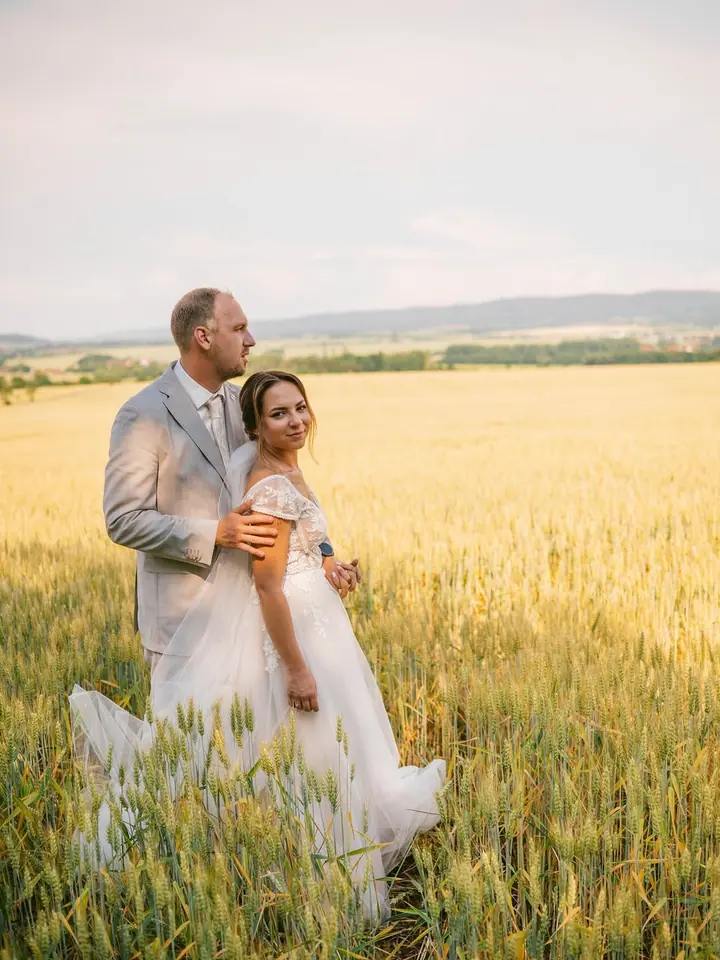
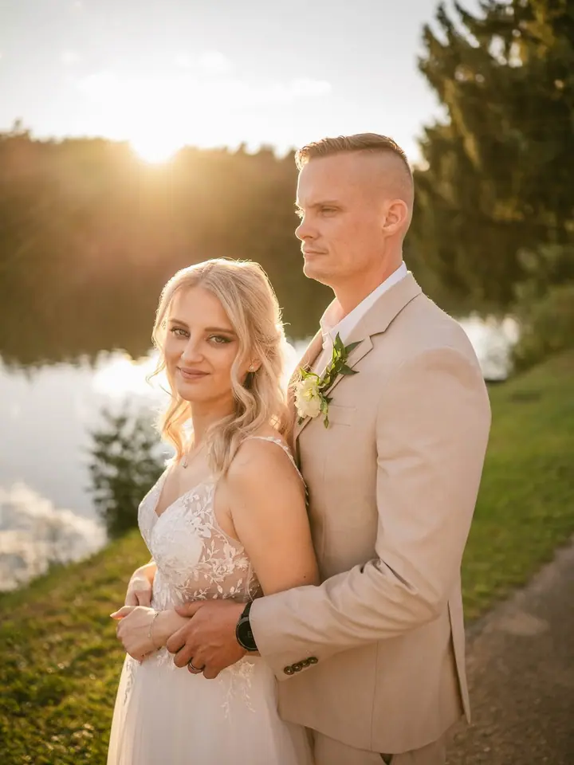
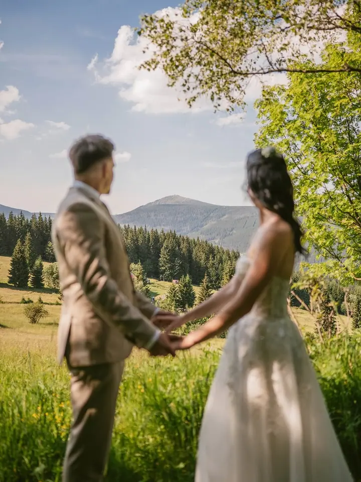
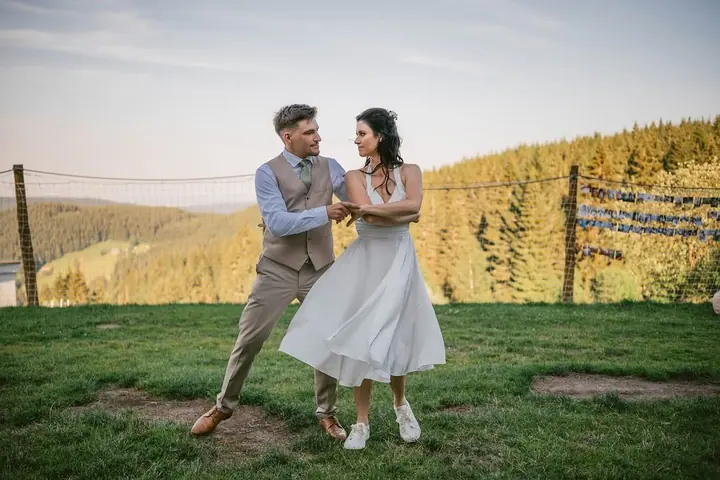
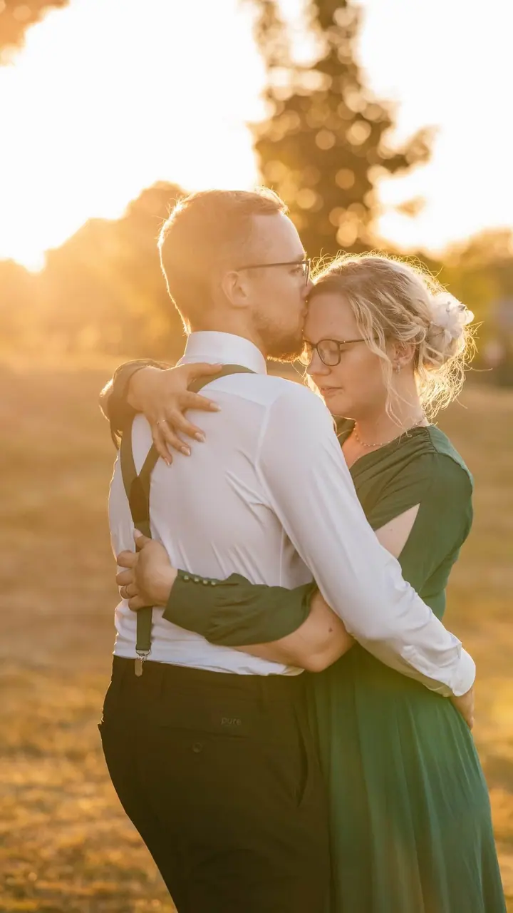

jedna
Svatby
Fotím svatby tak, aby každý snímek byl přirozený okamžik. Nejraději pracuji venku v přírodě, která fotkám dává jedinečnou atmosféru.

Svatební a rodinný fotograf · Praha, Praha a okolí, celá ČR

Jmenuji se Jan Mohyla, ale klidně mi říkejte Honza. Fotím svatby, páry a rodiny, nejraději venku v přírodě. Působím hlavně v Praze a okolí, ale přijedu za vámi kamkoliv v Česku.
Více o mně
Co fotím
jedna
Fotím svatby tak, aby každý snímek byl přirozený okamžik. Nejraději pracuji venku v přírodě, která fotkám dává jedinečnou atmosféru.
dvě
Klidná procházka ve dvou, při které na foťák skoro zapomenete. Fotky pak vypráví váš příběh, opravdový a jedinečný.
Rodinné fotky venku v trávě, v objetí a v pohybu. Chci, abyste se cítili pohodlně a odnesli si krásné vzpomínky.
Jemné focení v přírodě pro chvíli, kdy čekáte miminko. Snímky, které vám jednou tohle období připomenou.

Nejkrásnější fotky vznikají, když na foťák zapomenete.

Za objektivem
Jsem svatební a rodinný fotograf a nejvíc mě baví autentické momenty. Věřím, že nejkrásnější fotografie vznikají ve chvílích, kdy na foťák skoro zapomenete. Proto vás nebudu stavět do strnulých póz, spíš vás nechám být sami sebou.
Každé focení beru jako příběh, jedinečný, opravdový a váš. Rád pracuji v přírodním prostředí, v obilí, u vody nebo na louce v zapadajícím slunci. Příroda dodává fotkám atmosféru, kterou v žádném ateliéru nevytvoříte.
Mým cílem je, abyste se při focení cítili pohodlně a odnesli si krásné vzpomínky v podobě fotografií. Působím převážně v Praze a okolí, ale klidně za vámi dorazím kamkoliv v Česku.
Jan
Pošlete mi e-mail s termínem a místem. Ozvu se vám a domluvíme se, jestli máme termín volný.
Probereme, jak si svatbu nebo focení představujete a jaké místo by se k vám hodilo. Nejraději volím přírodu.
Fotím v klidu a bez strnulých póz. Chci, abyste se cítili pohodlně a na foťák skoro zapomněli.
Fotografie pečlivě upravím a pošlu vám je, abyste se k těm chvílím mohli kdykoliv vracet.
Portfolio
Otázky
Svatební sezóny se plní brzy, proto doporučuji ozvat se co nejdřív. Aktuálně už rezervuji termíny na rok 2027.
Ano. Působím převážně v Praze a okolí, ale klidně za vámi dorazím kamkoliv v Česku.
Vůbec ne. Nejkrásnější fotky vznikají ve chvílích, kdy na foťák skoro zapomenete, a k tomu vás během focení přirozeně dovedu.
Nejraději fotím venku v přírodě, která fotkám dodává atmosféru. Místo spolu vybereme tak, aby sedělo k vám.
Napište pár vět o tom, co si představujete. janmohylafoto@gmail.com